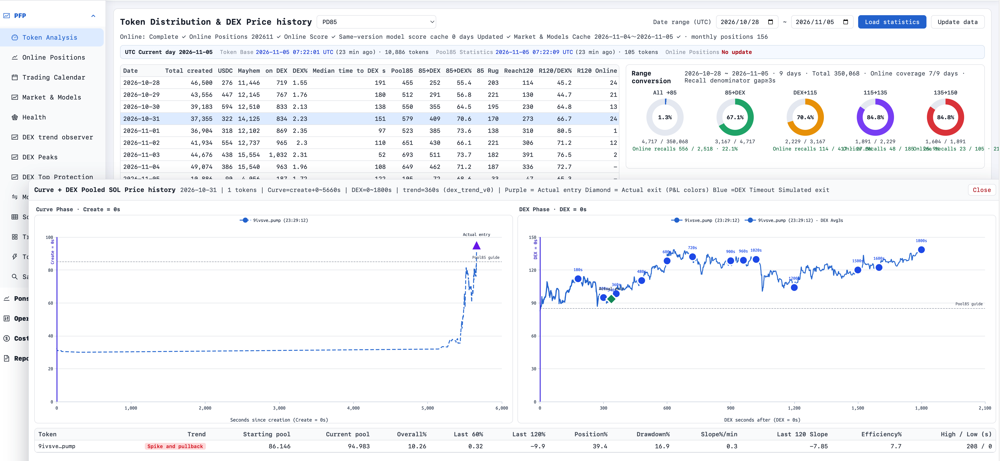
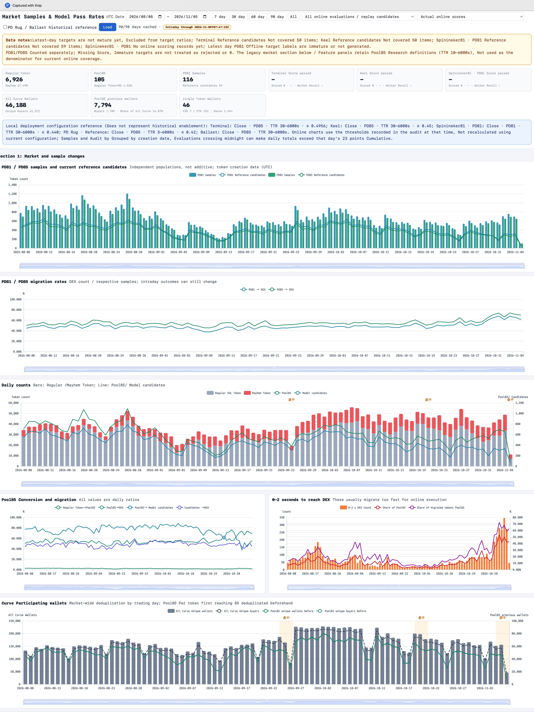
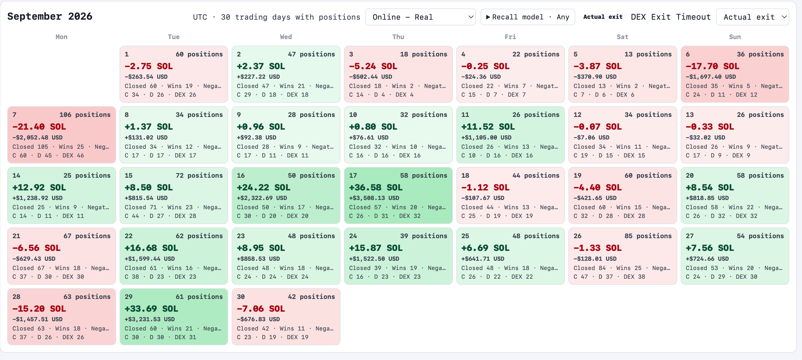
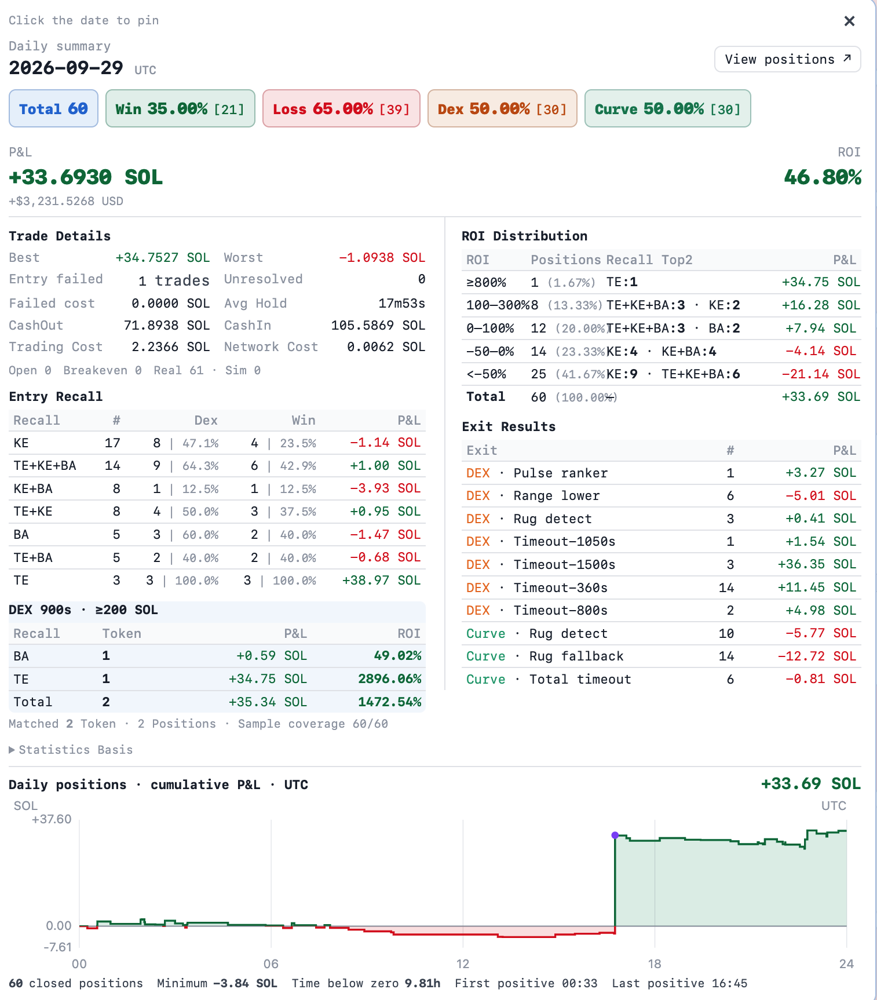

Max
Chasing 100 SOL in Monthly Profit: Building an AI Pump.fun Trading Bot
How six modules turn on-chain events into trading decisions, executed transactions, and better models.
Published · Updated
The Architecture: Two Connected Loops
The ambition is a trading bot that earns 100 SOL a month, with SOL being Solana’s native asset. That figure is a target to evaluate through recorded results after costs; this article lays out the system needed to pursue it.
A complete trading bot connects observation, decisions, execution, and learning. Its strategy needs current market state; its positions need confirmed transaction results; and its models need historical data that faithfully represents what the system could know at each moment.
Pump.fun is a token launch and trading platform on Solana, the blockchain that records its transactions. Tokens initially trade through a bonding curve, a pricing mechanism governed by a formula. Liquidity can subsequently migrate to PumpSwap, a pool-based exchange. A bot covering this lifecycle therefore needs to follow both the token and the market where it trades. Pump’s program documentation describes this relationship.
The architecture below supports both arbitrage and predictive trading. Arbitrage seeks to capture price differences across executable markets; predictive strategies enter and exit positions based on expectations about future conditions. They can share infrastructure, while requiring different decision logic.
Six modules organize the system: on-chain listening, trading strategy, transaction execution, model serving, offline analysis and training, and a management console. Together they form two connected loops. The live trading loop turns events into decisions and transactions. The learning loop turns recorded history into models that inform later decisions. Amazon Simple Storage Service, or S3, provides object storage for archived data and published model files.
The boundaries matter. Strategy owns trading decisions and position management. Execution owns the mechanics of submitting and checking transactions. The model service supplies predictions, while offline work produces model releases. Shared identifiers connect an observed event to a feature snapshot, a decision, a transaction, and its eventual position outcome.
On-Chain Listening: A Live Stream and a Durable History
The listening module supplies both immediate market updates and the historical record needed to study them later. These responsibilities belong together, but they benefit from separate processing paths: trading needs timely events, while archival work needs durable files and reliable uploads.
Streaming: deliver events to the strategy
The streaming branch subscribes to relevant transaction and account updates, decodes them, and produces a consistent event format. A token creation, trade, reserve change, or market migration should arrive with enough context for downstream consumers to understand what changed.
Useful context includes the token and market addresses, transaction identifier, position within the transaction, chain ordering information, observation time, and confirmation status. Recording when an event reached the bot is especially important: historical analysis must distinguish when something happened from when the strategy could have acted on it.
The stream also needs a policy for duplicate messages, reconnects, and missing intervals. Repeated delivery should not count the same trade twice. A detected gap should make the affected state visibly incomplete until it can be repaired. Early observations and subsequently confirmed records should remain distinguishable.
Log writing: preserve events on disk and upload them to S3
The archival branch writes transaction logs to local files, closes them into manageable segments, and uploads completed segments to S3. In this design, the archive covers the observed market activity, including trades made by other participants. That broader history supplies the context for understanding the bot’s own decisions.
Preserving original event payloads alongside versioned decoded records allows future analysis to revisit parsing assumptions. Files can be organized by date and event source, with metadata describing their coverage and completeness. Upload retries should be handled separately from live decision processing, with any growing backlog made visible.
Chain logs alone cannot explain why the bot traded. Strategy decisions, model responses, and execution results need their own linked records. Together, these records make it possible to reconstruct both the market and the system’s response to it.
Trading Strategy: Decisions Built on Market and Position State
The strategy module turns incoming events into an evolving view of the market and the portfolio. Entry and exit rules use that view to decide whether to trade, how much to trade, and what conditions must hold for execution.
Maintain the state that decisions require
| State | What it describes | How it supports decisions |
|---|---|---|
| Token state | Identity, lifecycle stage, recent trading activity, and derived signals | Helps entry and exit rules interpret the token’s current behavior |
| Market or pool state | Trading venue, reserves, pricing parameters, fees, and update freshness | Supports quotes for the intended trade size and estimates of available liquidity |
| Position state | Held quantity, cost basis, pending transactions, reserved capital, and strategy ownership | Determines what the bot can buy or sell without exceeding its allocation |
Token identity should remain stable even when its trading venue changes. Pricing logic, however, must match the current venue: a bonding curve’s pricing parameters and a pool’s available reserves should not be treated as interchangeable. Both entry and exit decisions need a quote for the intended quantity, rather than relying only on the latest observed trade price.
Entry, exit, and position management
An entry strategy combines eligibility rules, market conditions, model output, and capital limits. A favorable prediction is one input. The strategy still needs to establish whether its data is fresh, whether an order is executable within its limits, and whether the portfolio has room for the position.
An exit strategy evaluates existing holdings. It may combine an exit-model score with profit targets, loss limits, maximum holding time, changes in liquidity, or portfolio constraints. Exits can reduce a position in stages. Timer-driven checks are also useful, because a holding-time rule must still run when no new market event arrives.
Position management connects those decisions. Capital reserved for a pending purchase should be unavailable to another entry. Tokens committed to a pending sale should not be sold again by a second exit trigger. When several strategies share funds, they need a common allocation mechanism to prevent overlapping commitments.
For arbitrage, the strategy must evaluate the complete route: quantities across all legs, expected proceeds after costs, and any exposure left if execution is incomplete. An attractive quoted price difference alone does not establish an executable opportunity.
The strategy’s output is a trade intent: a structured request containing the strategy identifier, market, direction, amount, execution limits, expiry, and decision context. Position changes are then reconciled against execution results and chain state. After a restart, unresolved intents and actual holdings must be reconciled before new decisions rely on them.
Transaction Execution: From Intent to Verified Result
The execution module provides the chain-facing capabilities that strategies share. Given a trade intent, it constructs the required instructions, assembles and signs the transaction, sends it, and follows its outcome. Its responsibility is to carry out the intent within the supplied limits.
A typical execution flow has four stages:
- Prepare: select the appropriate market adapter, resolve required accounts, and build instructions that enforce the requested amount and price limits.
- Package and sign: assemble the transaction with its validity information and permitted resource and fee settings, then obtain a signature through the signing component.
- Submit: send the signed transaction through a configured network endpoint and record the attempt and transaction identifier.
- Resolve: check chain status, inspect errors, and retrieve the transaction details needed to determine actual asset movements and costs.
Solana’s remote procedure call interface, or RPC, lets software submit transactions and query chain data. A successful response from sendTransaction means the RPC accepted the submission; it does not establish that the transaction executed successfully. Solana documents this distinction explicitly. Solana’s transaction submission reference.
The executor should therefore distinguish submitted, unresolved, successful, failed, and expired outcomes, while also tracking the required confirmation level. Signature status queries provide confirmation and error information; transaction details provide the evidence needed for accounting. Solana’s signature status reference.
A timeout should leave an attempt unresolved until further evidence arrives. Before creating a replacement transaction, the executor must account for the earlier attempt so that retries do not accidentally produce a second purchase or sale. Multiple observations of the same transaction should update one execution record.
The result returned to strategy includes actual token and payment-asset changes, fees, status, and failure details where available. For a multi-leg arbitrage intent, execution must also satisfy the strategy’s required all-or-nothing guarantees or reject an unsupported route. These explicit results let position management respond to what happened on-chain.
Model Serving: Load Versions and Return Predictions
The model service makes trained models available to the live strategy. Its core responsibilities are loading model releases, managing updates, and answering prediction requests. Keeping these responsibilities separate allows model code and versions to change without entangling transaction construction.
The service supports two distinct prediction tasks. An entry model evaluates a candidate opportunity using the current market features. An exit model evaluates an existing position using market features together with position context, such as holding time and entry cost. Their training targets, inputs, and release schedules may differ.
A prediction request should identify the task, feature definition version, observation time, and relevant token or position. The response should identify the exact model version and return a clearly defined output. A ranking score, an estimated return, and a calibrated probability have different meanings; the strategy needs to know which it is receiving.
Make model updates explicit
Offline training publishes versioned model files to S3. A release should include the model, preprocessing information, required feature definitions, and metadata describing its training and evaluation. The serving process downloads the selected release, checks compatibility, loads it, and runs validation before making it active.
Entry and exit models should be selectable independently. The service can retain a previous working release for rollback, while every prediction records the version actually used. Publishing a model to storage and selecting it for live use are separate steps.
The strategy also needs defined behavior when predictions are unavailable or arrive too late. It may decline a new entry or use a previously configured rules-based policy. Existing positions still need their time limits and other exit rules evaluated. Model availability should not determine whether position management continues to run.
Offline Work: Turn Recorded History into Model Releases
The offline module reads archived events and system records to analyze behavior, build datasets, evaluate strategies, and train models. It supplies the learning loop with both new model artifacts and evidence about how those models were assessed.
Reconstruct what the strategy could know
Dataset construction starts with data quality. Missing intervals, duplicate events, decoding changes, and inconsistent market identities can all distort features and labels. An interval with no recorded events must be distinguishable from an interval in which the listener was disconnected.
Features should be reconstructed using information available at each decision time. Later trades can define a training outcome, but must not leak into the inputs for that earlier decision. Recorded arrival times help reproduce the difference between historical chain activity and information available to the running bot.
Entry and exit datasets serve different purposes. Entry examples describe candidate opportunities and their subsequent outcomes. Exit examples describe positions at decision points and the consequences of holding, reducing, or closing them. Exit training therefore needs position context consistent with the entry policy being evaluated.
Evaluate the whole decision process
Training, validation, and testing should respect time order, with care around overlapping samples and outcome windows. A strategy replay also needs assumptions about execution delay, fees, available liquidity, price impact, and unsuccessful transactions. Those assumptions belong alongside the results.
Model quality and trading quality deserve separate views. A model can improve a prediction metric while the resulting strategy trades too frequently or performs poorly after costs. Comparisons should therefore connect model outputs to position sizing, execution assumptions, and portfolio outcomes.
For each candidate release, retain the training-data reference, feature definitions, model settings, evaluation period, and results. Publish the complete package to S3 under an immutable version. This gives the serving layer a precise artifact to load and the console a traceable record to display.
Live decisions and execution outcomes then feed back into analysis. They can reveal stale features, discrepancies between simulated and actual execution, or changes in the distribution of model inputs. Those findings guide the next training cycle.
The Console: Follow the Entire System
The management console brings the data flow into one navigable interface. Its most useful capability is traceability: starting from a token, position, model, or calendar day, an analyst should be able to follow the records that explain the resulting activity.
| View | What it should make understandable |
|---|---|
| Data and pipeline | Incoming events, token and pool history, data freshness, missing intervals, and archive coverage |
| Positions | Open and closed holdings, pending intents, cost basis, fees, realized results, and valuation assumptions for unrealized results |
| Models | Entry and exit versions, training provenance, evaluation results, prediction distributions, and the releases currently selected for serving |
| Trading calendar | Daily activity and outcomes, with drill-down into decisions, transactions, and positions using a consistent timezone |
| Strategy comparison | Results under comparable periods, capital allocations, cost assumptions, and execution modes |
A position page should connect its entry decision to the feature snapshot, model response, submitted transaction, confirmed asset changes, and subsequent exit decisions. That chain of evidence helps distinguish a strategy problem from a data problem or an execution problem.
Comparisons also need context. Simulated trades, predictions recorded without placing trades, and live executions should have clear labels. Calendar results should distinguish realized profit and loss from changes in the estimated value of open positions. Different capital allocations should remain visible when comparing strategies.
Management controls can include enabling or pausing strategies, adjusting allocations, selecting model releases, and requesting position reductions. These actions should pass through the same strategy and execution interfaces used by automated decisions, with a record of what changed. The console then remains connected to the system’s actual state.
Data pipeline: from candidate to position to exit
The token-analysis view connects the candidate funnel to an individual token’s trading lifecycle. The table and conversion summaries provide the broader context; the opened chart follows one token through its bonding-curve phase and onto a decentralized exchange, or DEX. The left plot measures time from token creation, while the right starts at migration to the exchange. The vertical scale shows pooled SOL, with SOL being Solana’s native asset.
A purple triangle marks the recorded entry, and a diamond marks the recorded exit. Blue circles show simulated exits at different timeout durations after migration. Placing these alternatives on the same observed trajectory makes exit timing easier to examine: the reader can compare the actual decision with what the displayed time-based rules would have done.

Market changes and the models’ sample base
The market overview places daily token activity alongside model sample counts and candidate counts. It also tracks migration rates and participating wallets. Together, these views help an analyst investigate whether a change in trading activity began with the wider market, the available sample population, or the models’ selection process.
The screenshot plots separate sample groups and their reference candidates independently. It also flags missing scores and recent outcomes that are still incomplete. Keeping those distinctions visible prevents missing predictions from being counted as rejections and helps explain why the latest day’s figures may still change.

The trading calendar: find the days worth investigating
The September 2026 calendar has Online – Real and Actual exit selected. Each day combines position counts, closed-position counts, and reported profit and loss in SOL and US dollars. Results such as −21.40 SOL on 7 September and +36.58 SOL on 17 September make the variation within the month visible and provide a starting point for examining particular days.

Daily trade details: explain the result
The detail panel for 29 September 2026 breaks the day into 60 closed positions: 21 wins and 39 losses, with one failed entry listed separately. It reports +33.6930 SOL in profit and loss. The largest winning position contributed +34.7527 SOL, exceeding the day’s net result—a concrete reason to examine the distribution of outcomes alongside the 35% win rate.
The entry-selection groups and exit-result tables show how different parts of the strategy contributed. Costs, holding time, and the return distribution add context, while the cumulative profit-and-loss curve shows when the result emerged. This connects the calendar’s single daily number to the positions and exit decisions behind it.

System Costs
Running the bot requires a budget for hosting, data storage, and access to Solana. This setup uses Amazon Web Services (AWS) for deployment, alongside Chainstack and Helius, two providers that connect the system to the blockchain.
Using October 2026 as a reference month, the AWS cost attributable to the bot is USD 190.12. Compute and cluster management account for USD 111.41 of that amount; the remainder covers the database, storage, data transfer, and supporting services.
| Component | What it pays for | Monthly cost reference |
|---|---|---|
| AWS deployment | Compute, cluster management, database, and storage supporting the running services and their data | USD 190.12 attributed to the bot for October 2026 |
| Chainstack | Chain access and the streaming feed used by the listening module | Budgeted at USD 49 for the entry-level subscription plus USD 49 for streaming, totaling USD 98 |
| Helius | Backup chain access during Chainstack interruptions, plus the primary route for submitting transactions | Budgeted at USD 49 per month |
| Combined baseline | Attributed AWS usage plus USD 147 in subscriptions | USD 337.12 for October 2026 |
The overlap between providers is intentional. Helius gives the system an alternative when Chainstack becomes unreliable and serves as the main transaction submission provider. That redundancy supports continuity in the live trading loop.
For planning, these figures suggest a starting baseline of roughly USD 190 per month for attributed AWS usage, or USD 340 including subscriptions, assuming a workload similar to October’s. Shared compute and cluster charges are only partly allocated, and some shared network costs remain unassigned. The complete system budget therefore needs room for additional attributable infrastructure costs, as well as transaction fees.
Summary
A complete Pump.fun trading bot connects six modules: on-chain listening, trading strategy, transaction execution, model serving, offline analysis and training, and a management console. Together, they turn market events into decisions and confirmed trades, then use the recorded history to support further analysis and model development. The console makes these connections visible, from a token’s first appearance to a position’s final outcome.
What comes next
- Entry strategies: How to identify eligible candidates, choose an entry moment, and determine position size.
- Model and target selection: What the models should predict, how to define their training targets, and how to evaluate their usefulness for trading decisions.
- Exit strategies: How to combine model predictions, market conditions, and holding-time rules when deciding whether to hold, reduce, or close a position.
- Can a profitable strategy last indefinitely? Explore this question in Pump.fun’s player-versus-player (PVP) setting, where traders compete with one another and both competitors and market conditions can change.